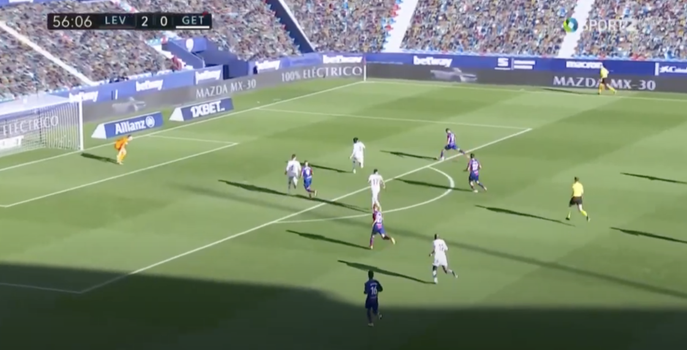

-
For a winger, de Frutos defends very well. He presses with high intensity, and is quite aggressive in his pressing high up the field. He averages 5.07 pressures in the final third per 90 minutes played, ranking in the 86th percentile for La Liga players. He also tracks back well, supporting his fullback in defense. However, his biggest issue in defense is his tendency to lose the man he is marking in his defensive third. When he is tracking a crossing target, all his man has to do is get behind de Frutos and get in his blind spot, which will allow the attacker to exploit de Frutos’ lack of concentration. An example of this (not from a cross, but from an attack up the middle of the pitch) can be seen below.
de Frutos has shown a high level of positional awareness, something that he uses quite often to expose opposition defenses. He consistently is checking his surroundings, looking over his shoulder, and making movements and runs to open up space for others. He makes very intelligent runs, knowing that he can shift opposition players to create space and chances for his teammates. This is one of the best facets of his game.
de Frutos is an aggressive dribbler who is eager to take on his opponents, something that is a bit rarer amongst players nowadays. His first touch (which is inconsistent, and usually too far in front away from his body) is direct and most-often towards goal. His close dribbling skills are great (as seen in the clip below), and his pace-dribbling is good as well; however, as de Frutos is quite small, he is often pushed or bodied off of the ball by larger defenders when going shoulder-to-shoulder. He also has shown issues with decision making, as his first thought is always to take on his opponent, even when there are easier and better options available.
Another issue with his dribbling is his lack of ambidexterity. He is right foot dominant, and the majority of his touches are only taken with his right foot (also seen in the clip below: all of his touches taken when dribbling were with his right foot, his only touch with his left was the squared pass across goal). This makes it easier on defenders, as they only have to show him onto his left foot, where he is significantly worse.
A small (but important) result of his lack of technical skill with his weak foot is his inability to cut in from the right flank to take long distance shots with his left (think prime Arjen Robben). Since he doesn’t cut in to shoot or pass, this makes him significantly more predictable and easy to defend, as the opposition knows that he will always try to use his pace down the touch line.
de Frutos is a quality passer from short and medium distances, he is comfortable on the ball. He makes very few long-range passes to switch the point of attack or to find forwards in behind, but this isn’t an issue for a winger. He is very “crossing-oriented” and has completed 0.56 crosses per 90 minutes so far this season in La Liga (ranking in the 91st percentile). However, like his dribbling, he suffers from overuse of his right foot, and this hinders his passing ability greatly, as he is very limited with what he can do with only his right foot. The three clips below are examples of this (click on the pictures to access the clips).
His passing under pressure is also quite inconsistent, with him often struggling when he is caught immobile in a tight area with few options. However, he is capable of moments of brilliance, and his one-touch passes from tight spaces are a thing of beauty.
In the first clip, de Frutos is under pressure in the middle of the pitch, and his body is set so that he can make a pass with his left foot (after settling with his right). Instead of making an easy pass with his left foot to his teammate that is less than 10 yards away, he chooses to flick the ball with his right foot, giving the ball to the opposition and ending Levante’s spell of possession.
2 goals from 10 shots isn’t a bad tally for a player in his first season in the top flight, and de Frutos has overperformed his expected goals (xG) rate of 1.7. He does well to get into good finishing positions, but just like his passing and dribbling, his finishing is hindered by his overreliance on his right foot. Both of his goals this season were scored with his right, and only one of his 10 shots this season have been on his left foot.
Most of his shots have come from counter attacks, as de Frutos prefers to attack when his opposition is retreating. He doesn’t tend to shoot when the opposition defense is packed into their own penalty area (or defending in a low-block system). In these situations, de Frtuos is more likely to resort to crossing to his other forwards.
His shots seem to be a mix of accuracy and power (leaning more towards power), as he tries to blast the ball past the goalkeeper. He could have at least 2 more goals this season if he were to place his shots rather than just try to power them past the goalkeeper.
His two goals are clipped below, and the third clip is a shot that could have been a goal had de Frutos placed it better.


As de Frutos is only 173 cm, he doesn’t stand much of a chance in aerial duels (he has a 22.2% aerial duel win rate this season). However, when he has space and time, his ability to settle the ball out of the air is top class.
When it comes to 50-50 ground duels, de Frutos is often beaten due to his small frame. He may get to the ball before his opponent, but he will usually be bodied off of the ball or draw a foul.
de Frutos has taken a few corners for Levante this season, and is able to put in outswinging corners from the right side, and inswingers from the left. Levante’s corner kicks are a mix of trying to find players at the front and back posts, and de Frutos has the technical ability to place his deliveries with relative consistency. Levante also frequently plays short corners, sometimes playing the ball back to de Frutos, allowing him to put in a cross from a better angle. He has 1 assist from a corner kick this season, proving his worth on set pieces.
Occasionally, he has also been used on free kicks that require a cross rather than a shot, which saw the same results as the corner kicks (good, but not excellent deliveries). He has much room to improve on set pieces, but that will come with more experience and practice.
Jorge de Frutos has shown to be a quality player in his first season in La Liga, but he still has much room to grow. He is still very raw, and his decision making needs improvement. He has done well so far in earning his rotation role at Levante, and I expect him to solidify himself as a starter (most likely in the right wing position) by the end of the current season. I think that he has a high ceiling, and with the right coaching, could become a regular for a Europa League contending team, or even a squad player for a Champions League level team. I believe that he'd be a very flexible player, able to adapt to almost any system, which could be a huge advantage for any teams that may be interested in signing him.
*Side note: after what I’ve watched of de Frutos, I’d be very interested in seeing de Frutos tried at a wing back position, or even as a full back. I think that he has all of the right qualities to make the transition, similar to what Jesus Navas has done at Sevilla, or even Lucas Vazquez at Real Madrid.